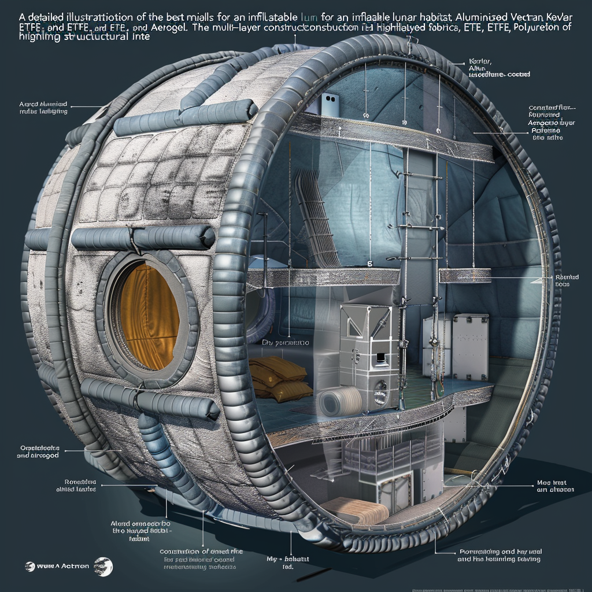

Materials for Inflatable Lunar Habitat
Materials for Inflatable Lunar Habitat

Best Materials for the Inflatable Structure
Vectran
- Properties: High-performance thermoplastic multifilament yarn with exceptional tensile strength, low elongation, and high resistance to cuts and abrasion.
- Benefits: Used in aerospace applications due to its durability and ability to withstand extreme conditions, providing excellent structural support for the inflatable habitat.
Kevlar
- Properties: Aramid fiber known for its high tensile strength-to-weight ratio and resistance to impact and heat.
- Benefits: Adds additional structural integrity and puncture resistance, ideal for the outer layers of the habitat to protect against micrometeorites and other impacts.
Aluminized Mylar
- Properties: Polyester film known for its reflective properties, excellent barrier to heat and radiation when aluminized.
- Benefits: Used as a reflective layer in the multi-layer insulation (MLI) blankets, providing thermal control and protection against solar and cosmic radiation.
Polyurethane-Coated Fabrics
- Properties: Provides waterproofing, flexibility, and resistance to environmental degradation.
- Benefits: Serves as the innermost layer of the inflatable structure, ensuring airtightness and preventing leaks.
ETFE (Ethylene Tetrafluoroethylene)
- Properties: High strength, corrosion resistance, and ability to withstand a wide range of temperatures.
- Benefits: Durable, light-weight films used in construction of the inflatable habitat, beneficial for lighting and plant growth within the habitat.
Aerogel
- Properties: Highly porous, lightweight materials with exceptional insulating properties.
- Benefits: Integrated into the habitat’s walls for additional thermal insulation without adding significant weight.
Multi-Layer Construction
- Outer Layer: Kevlar reinforced with Vectran for structural integrity, impact resistance, and protection against micrometeorites.
- Intermediate Layers: Aluminized Mylar as part of Multi-Layer Insulation (MLI) blankets for thermal control and radiation protection.
- Inner Layer: Polyurethane-coated fabrics or ETFE for airtightness and preventing leaks.
- Insulation Layer: Aerogel blankets for thermal insulation, maintaining a stable internal temperature.